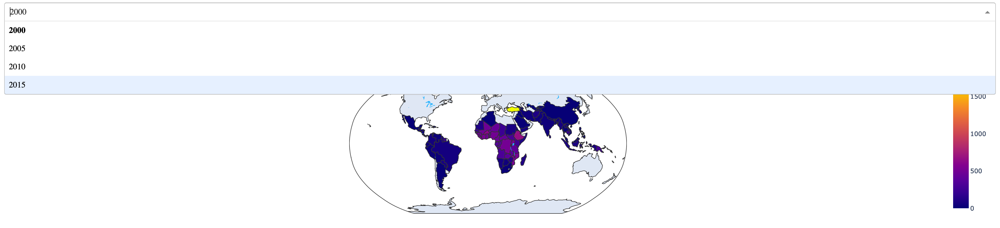
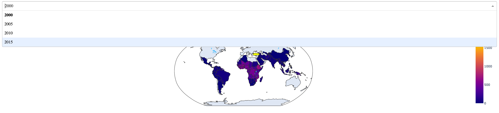

3. Creating effective visualizations
In this project, three informative visualizations about malaria is created using Python in a Jupyter notebook.
Plotly
Plotly is a Python graphing library that makes interactive, publication-quality graphs.
For this assignment, I choose to use plotly as the major library tool. There're couple of reasons to choose plotly.
Creat Visulization
STEP 1: Package Installation

STEP 2: Creat graph and customize interactive features by sepecifying input and ouput
STEP 3: Set dash web application framework to display the interactive visual
Output
Visulization 1: Interactive Visulization1: Years vs Number of Incident Globally
use dropdown menu to filter 'Year'
 

Interactive Visulization2: Age Distribution vs Number of Death in each country Over years
use dropdown menu to select 'Country'
Interactive Visulization3: Years vs Number of Death per 100,000 people
use slider bar to select 'year'